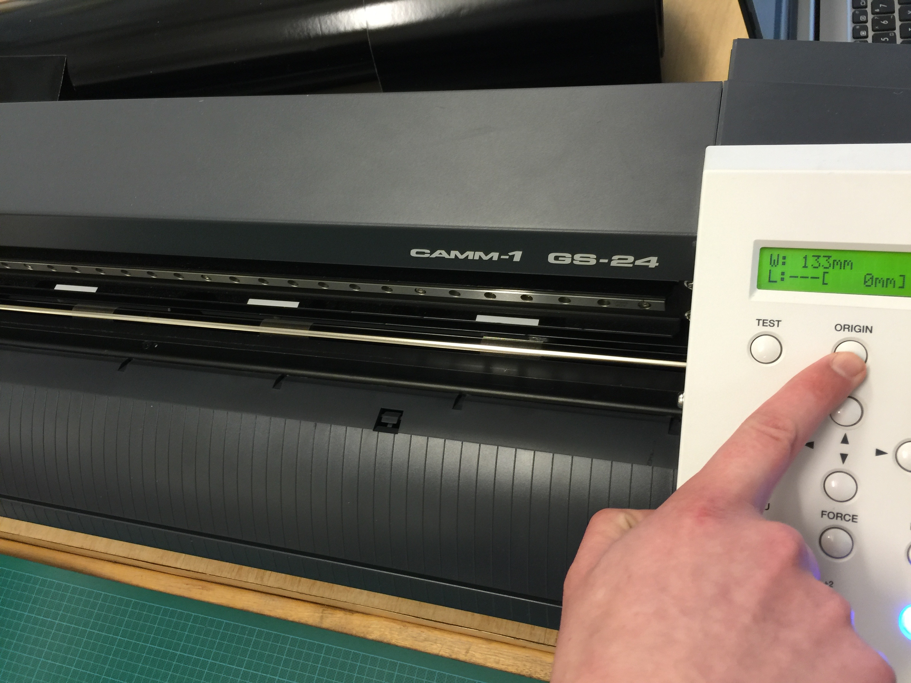

Computer-controlled Cutting
Using laser cutter and vinyle cutter
This Week's Assignment:
The assignment for this week is to create a press-fit construction kit. See detail here.
- Your pieces must fit together without using glue, nails, screws or other fasteners.
- You will need to adjust your joints to fit together in a precise way.
- Please note that if you change your material type (or switch to a different supplier - for example: swapping one type of plywood for another type.) the thickness of your material will change and your joints may no longer fit snuggly together.
- Cut a shape with the vinyle cutter
Vinyle cutting with the roland camm-gs24
Putting the material into position or aligning the paper:
I lifted the lever to pu a vinyle sheet
-
Align
I verified that the edges of the sheet are aligned with the lines of the machine. I lower the lever to hold everything down tight
Selecting paper before print
Turn the power on and select “Roll” for roll of paper. The other option is to choose piece. That is in case you have a piece left over. Selecting this option will scan the vinyle paper area. The sheet will come out and get back out again. I notice that opting for this option 1 time out of tree will tear the paper. For an unknown reason when it goes back, one of the wheel seems to pull the vinyle more on the left and making the paper unaligned. I just choose «Roll» and make sure I align my blade to the right place. I moved the head of the cutter with the arrows. Selecting the “Origin button will” set the point where the tracing will start. Message appears ORIGIN SET. Make a cut test. verify if it does not cut through and if all piece detach correctly. 
Make sure the bottom is straight
From the back of the vinyle cutter I Slided the paper forward leaving about a centimeter. I place the paper under two wheel that is being used as clamps. Note that it must be located under the white stripes.
See this video for more information :
Using the Roland GS 24
Setting up the Roland GS 24
Illustrator Plugin
Note: I later installed the plugin on Mac in Illustrator so that I would not have to switch between computer. I downloaded the Roland pluggin for Illustrator here.
DRAWING IN ILLUSTRATOR
I draw a robot in Illustrator for an even called : Night of the Robot. The event will be held at the lab Montréal nuit blanche, where we stay awake all night and listen to code signed stories of robots made by users.
I saved my file in ai file format and opened it on the computer hooked to the vinyle cutter. Inkscape is installed with Rolland closed application named StudioCut. To cut, I selected on the menu “Extension” and then StudioCut. It would not work at first because we did not have the password for activating the software on the logged in user.
 When I opened the file from Illustrator (AI) format to Inkscape (SVG), I noticed that the drawing was not merged properly. I went back in Illustrator and use the PathFinder tool to merge the element. There should be a closed form without a line otherwise the piece will be cut.
I fixed the path, saved it in SVG. Opened it in Inkscape on the vinyle cutter computer and printed it with StudioCut extension.
When I opened the file from Illustrator (AI) format to Inkscape (SVG), I noticed that the drawing was not merged properly. I went back in Illustrator and use the PathFinder tool to merge the element. There should be a closed form without a line otherwise the piece will be cut.
I fixed the path, saved it in SVG. Opened it in Inkscape on the vinyle cutter computer and printed it with StudioCut extension.-
When I opened the file from Illustrator (AI) format to Inkscape (SVG), I noticed that the drawing was not merged properly. I went back in Illustrator and use the PathFinder tool to merge the element. There should be a closed form without a line otherwise the piece will be cut. In the preference pane, GF is the force or pressure of the blade and speed is set in cm per second; it shows that I am cutting at 20 cm per second at 50 grams a force. I could have also changed these preferences by selecting the menu on the vinyle cutter too. Note that for smaller detail, I would have set it to a lower speed.
NOTE: In case the blade need to be changed or installed
- Open the latch
- Install the blade
- Close the latch and lock by turning the rotating part of the tip in a clockwise direction
- Insert the blade and adjust
USING THE TRANSFERT TAPE
It is a nice to have. I used masking tape when I did not have this before and the result is a much easier process
{kind=link}
Laser Cutting
Making a joint with the laser cutter.
Ordering the Cardboard
I learn last week that there were good cardboard and lesser quality ones for making prototyping. Since it really is a cheap way to prototype with the laser cutter, I order a bunch on Uline site. Image below show how softly bending the diffrent cardboard it would either folds or soft curve. The latter is the one I wanted.
Learning from Neil: Student often mess up the joint on the final piece, so I wish to make as much as possible joint before getting to the final piece. For the excercice I made a clone in Inkscape with the help of Brandi Dison, that I met on our hedo team meeting, and learn how to create child shape. The Child shape makes a relation with the original shape (parent shape) so that if we change the parent shape all the child shape would change altogether, saving time; espescially in complexe assembly pieces.
I know there was a file made in Antimony that had all the joint but I could not find it. It will be another hunt another day. There were so many interesting thing to try from the tutorial page. Brandi even send me a link of multiple joint published by Make Magazine. Without the drawing. She once ask her student to do it all!!!
Working the file in SolidWork
Solidwork works only on PC and since I work with a Mac I had to install on another PC. Having to carry two computer was not very practical for my traveling habit. I leave in Gatineau and the lab is in Montréal, about two hours of driving. So I installed it on Parallels>, a virtual machine for mac. For the little excercice I did, it works well especially in coherence mode wich makes it easy for me to switch from mac to my MV seeminglessly.
For the excercice, I downloaded one of the file suggested in the tutorial on Instructable.

The space cut in the joint was a bit too tight so the corner of the cardboard was not as beautifful as I would have wanted.